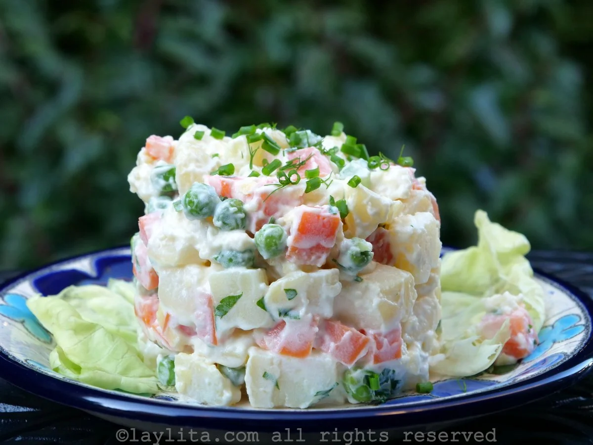

Recetas de Doña Petrona
Receta de Vitel Toné

El vitel toné (vitello tonnato que significa carne atunada), es una receta sencilla de hacer y versátil de transportar y servir.
Leer RecetaPágina de Referencia
Receta de Ensalada Rusa
La ensalada rusa es considerada por muchos como el acompañamiento ideal para los platos principales de la época festiva
Leer RecetaPágina de Referencia